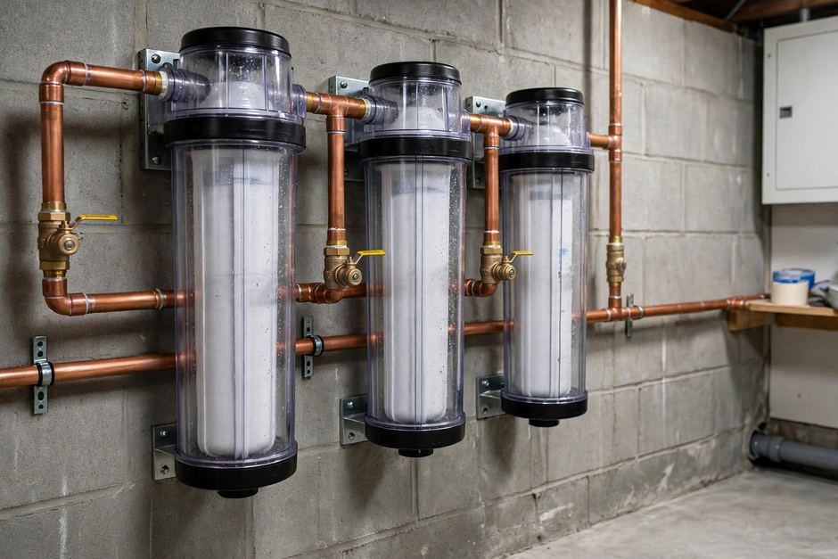
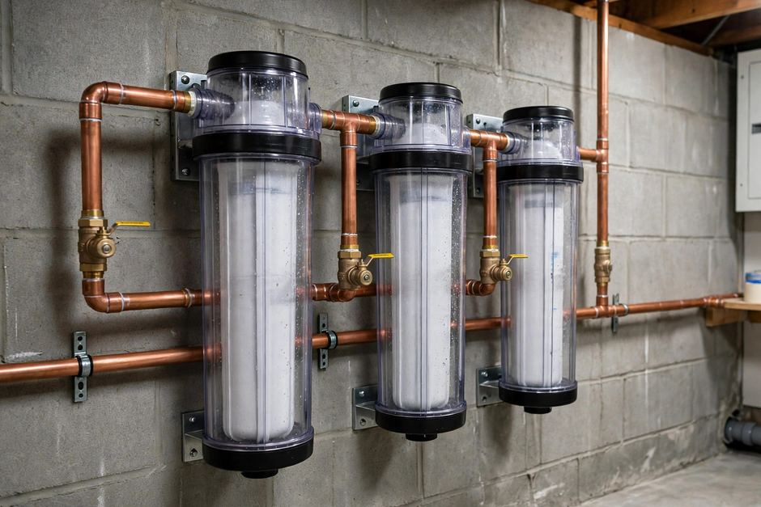
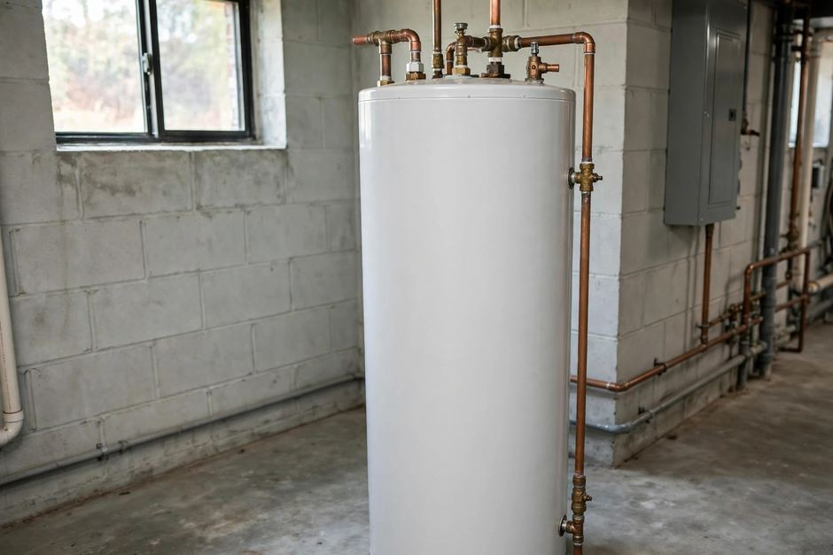

Filtration Options
Water Filtration System in Belleville, IL
A water filtration system targets taste, odor, chlorine, and sediment concerns in drinking and household water. Filtration is distinct from softening, because a filter does not remove the dissolved minerals that cause scale. Hinkle Plumbing Company discusses whole-house and point-of-use options in Belleville, IL, with water softener choices kept separate for clarity.
1610 W Main St, Belleville, IL 62220Monday through Friday, 8:00 AM to 4:30 PM(618) 677-6556
What This Service Covers
Water Filtration Scope in Belleville
Filtration scope covers system selection, installation location, filter media, and maintenance context for homes in Belleville, IL. Each option below addresses a different concern, and selection reflects water use patterns and household priorities.
Whole-House Carbon Filtration
Whole-house carbon filtration treats water at the entry point for taste and odor concerns throughout the home. Media type, flow context, and maintenance needs are discussed during planning, and the system is matched to household water use patterns.
Sediment Filtration
Sediment filtration removes particles that affect clarity and that can collect in fixtures and appliances. Filter placement and maintenance intervals are discussed in general terms, and sediment findings shape media and housing selection.
Point-of-Use Reverse Osmosis
Point-of-use reverse osmosis treats water at a single tap, usually at a kitchen sink, for drinking and cooking use. Storage, drain connection, and filter changes are discussed during planning, and the unit is scoped separately from whole-house systems.
Under-Sink Filter Units
Under-sink filter units treat water at one faucet without treating the whole home. Cabinet space, faucet connections, and filter access are reviewed, and the unit is matched to the tap where treated water is wanted.
Filter Maintenance Review
Filter maintenance covers media replacement context, housing condition, and flow observations over time. Maintenance needs vary by system type and water use, and replacement timing is discussed in general terms during planning.
Softener Distinction Review
Filtration and softening are reviewed side by side so household expectations stay clear. A filter does not soften water, and a softener does not replace filtration for taste and sediment concerns, so each system keeps its own purpose.
About Hinkle Plumbing Company
Filtration Planning From a Belleville Base
Hinkle Plumbing Company is based in Belleville, IL, and discusses water filtration options for homes in Belleville. System selection starts with water concerns, use patterns, and installation location, and softening is kept as a separate discussion.
Belleville drinking water is supplied by Illinois American Water from a Mississippi River plant, using surface water as the source. That supply context shapes filtration discussions, because taste, odor, and sediment concerns are addressed through filtration while mineral concerns belong in a separate softening discussion. Hinkle Plumbing Company reviews household priorities and installation space, and water heater installation timing can be considered where piping access overlaps.

How we workImage showing a whole-house filtration unit installed near water entry piping in a Belleville home.
How Selection Works
Filtration Selection Steps
The steps flex with the condition of the job, but the sequence stays the same.
Discuss Water Concerns
Taste, odor, clarity, and sediment observations are discussed to identify the concern. Concern details help separate filtration needs from softening needs, because each system addresses a different part of water quality.
Review Use Patterns
Household size context, fixture use, and drinking water habits shape system sizing context. Use patterns help determine whether whole-house treatment or point-of-use treatment fits the household priorities discussed.
Check Installation Space
Entry piping, cabinet space, drain access, and maintenance access are checked for the proposed location. Space findings shape housing selection and placement, and maintenance access is kept in mind from the start.
Select System Type
Whole-house, under-sink, and point-of-use reverse osmosis options are compared on purpose and coverage. Selection reflects the concern, the coverage wanted, and the installation space available in the home.
Install and Review
After installation, connections, flow at fixtures, and filter housing condition are checked. Maintenance context is discussed, and household members are shown how filter changes fit into ongoing care.
System Types
Filtration Methods Compared
Filtration methods differ in coverage, media, and maintenance context. The comparison below keeps each method distinct, so selection reflects the concern and the coverage wanted rather than a single default choice.
Carbon Media Systems
Carbon media addresses taste and odor concerns through adsorption at the filter media. Media type and housing size are discussed during planning, and maintenance context reflects water use and media life in general terms.
Sediment Media Systems
Sediment media captures particles before water reaches fixtures and appliances. Media fineness and housing selection reflect clarity observations, and filter changes are discussed as part of ongoing system care.
Reverse Osmosis Units
Reverse osmosis units treat a limited flow at one tap through a membrane and pre-filters. Storage capacity, drain connection, and filter maintenance are discussed, and coverage stays limited to the tap served.
Whole-House Placement
Whole-house placement treats water at entry so every fixture receives filtered water. Piping layout, shutoff access, and bypass context are reviewed, and placement reflects maintenance access and household priorities.
Point-of-Use Placement
Point-of-use placement treats water at a single faucet, leaving the rest of the home untreated. Placement suits drinking and cooking priorities, and cabinet space and drain access shape the installation plan.
Combined System Planning
Combined planning can pair whole-house filtration with point-of-use treatment where both coverage levels are wanted. Each system keeps its own maintenance context, and softening remains a separate discussion where mineral concerns exist.
Common Patterns
When Filtration Is Discussed
Filtration discussions often start with taste, odor, or clarity observations at taps. The patterns below describe common reasons for an assessment, without describing a specific property or job.

Taste and Odor at Taps
A common call describes taste or odor concerns at kitchen and bathroom taps, with no single fixture explaining the pattern. Assessment reviews water use, entry piping, and household priorities to determine whether whole-house filtration fits. Softening is kept separate in the discussion, because filtration addresses taste and odor while mineral concerns call for a different system. Combined findings shape the plan, and household observations are included in the discussion.
Sediment and Clarity Concerns
A common call describes sediment or clarity concerns that show up in glasses, at aerators, or in appliance filters. Assessment reviews sediment observations, piping condition, and installation space to shape media and housing selection. Point-of-use treatment is discussed where only drinking water coverage is wanted, and whole-house treatment is discussed where broader coverage is wanted. The pattern is reviewed with related systems, and findings are discussed before work begins.
Signs to Note
Water Signs That Point to Filtration
Most calls fall into a few patterns. Knowing which pattern applies decides what the visit involves.
Unpleasant Taste
Unpleasant taste at taps can reflect chlorine-related taste or other taste factors in the supply. Taste patterns across taps help shape filtration selection, and softening is not presented as a taste solution.
Odor at Taps
Odor at taps can reflect supply or plumbing factors, and the pattern across fixtures helps narrow the discussion. Filtration options are reviewed for odor concerns, while drain odor is assessed separately as a drainage matter.
Cloudy or Particle-Filled Water
Cloudy water or visible particles can reflect sediment in the supply or disturbance in piping. Clarity observations shape sediment media selection, and piping condition is considered alongside filtration options. Findings guide the next steps.
Sediment at Aerators
Sediment collecting at aerators or in appliance filters can signal particle load in the water. Aerator findings, piping age context, and filtration placement are reviewed together during planning. Assessment findings guide the response.
Scope Factors
What Shapes Filtration Scope
Coverage, system type, and installation space shape filtration scope.
Coverage Level
Whole-house coverage, single-tap coverage, and combined coverage each carry different piping and housing scope. Coverage priorities from the household shape the plan, and scope is discussed by phone before work is scheduled.
System Type and Media
Carbon, sediment, and reverse osmosis systems differ in housing, media, and drain needs. System type findings from assessment shape the plan, and maintenance context is included in the scope discussion.
Installation Space
Entry piping layout, cabinet space, and drain access affect installation effort. Space findings are reviewed during planning, and readers are invited to call to discuss scope for a specific home in Belleville.
Reviews from Google
What Customers Say on Google
★★★★★
“Very prompt and responsive, the worker was friendly and informative! Will use this company again!”
★★★★★
“Don did an outstanding job for me when I needed him and highly recommend his business”
★★★★★
“Rated 5.0 out of 5 across 3 Google reviews, all five stars.”

Does a water filter soften water?
No. A filter targets taste, odor, chlorine, and sediment concerns, and it does not remove the dissolved minerals that cause scale. Softening is a separate system with a separate purpose, and filtration and softening discussions are kept distinct during planning.
What is the difference between whole-house and point-of-use filtration?
Whole-house filtration treats water at the entry point so every fixture receives filtered water. Point-of-use filtration treats water at a single tap, usually for drinking and cooking. Coverage priorities and installation space shape which option fits a household. Household observations are included in the discussion, and findings shape the response.
Where does Belleville drinking water come from?
Belleville drinking water is supplied by Illinois American Water from a Mississippi River plant, using surface water as the source. Supply context is discussed in general terms during filtration planning, and household water concerns shape system selection. Assessment findings are discussed plainly, and related observations are reviewed together.
What affects the scope of a filtration installation?
Coverage level, system type, media selection, installation space, and drain access shape the scope. Each factor is reviewed during assessment, and readers are invited to call (618) 677-6556 to discuss scope for a specific home in Belleville. Findings are discussed by phone before work is scheduled.
Related services
Other Plumbing Services We Handle

Water Softener Installation in Belleville, IL
Water softener installation addresses mineral concerns separately from filtration, with salt-based and no-salt options explained.
Water Heater Installation in Belleville, IL
Water heater installation covers tank replacement and installation planning, including piping access and permit context.
Plumbing Repair in Belleville, IL
General plumbing repair covers leaks, drips, clogs, and fixture problems that can appear alongside water quality concerns.Mon–Fri 8:00 AM–4:30 PM
Discuss Water Filtration in Belleville
Call (618) 677-6556 during Monday through Friday, 8:00 AM to 4:30 PM to discuss water filtration in Belleville. Closed Saturday and Sunday. Taste, odor, and sediment concerns are reviewed before system selection.

Talk with the local team
Request Water Filtration
Call (618) 677-6556 during office hours, Monday through Friday, 8:00 AM to 4:30 PM. Tell us what is happening and we will talk through the next step.